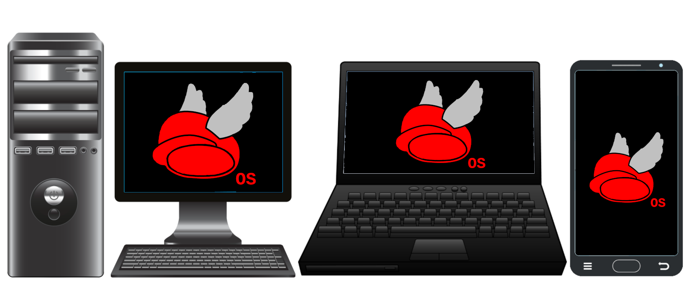

Navigation
M Series Hardware

Product Description
Our M Series line of hardware is a selection of devices made from components specially
curated for optimal performance when running Wing Cap OS.
It is recommended for people who are interested in using Wing Cap OS, but don't want
to install it themselves.
Product Enumeration
M Series hardware includes the following complete systems:
-
Desktop PCs:
-
M Series Desktop Pro - An x86-64 desktop PC made with modern, heavy-duty
parts, well suited for rather demanding tasks
-
M Series Desktop Modern - An x86-64 desktop PC made with modern, mid-grade
parts, well suited for everyday personal use
-
M Series Desktop Lite - A 32-bit x86 desktop PC made with lower-spec, more
affordable, and less power-hungry parts
-
Servers:
-
M series Server Pro - An x86-64 server made with modern, professional-grade
parts, well suited for large-scale business applications
-
M Series Server Modern - An x86-64 server made with modern, consumer-grade
parts, well suited for personal use or small-scale business applications
-
M Series Server Lite - A 32-bit x86 server made with lower-spec, more
affordable, and less power-hungry parts
-
Laptops:
-
M Series Laptop Pro - An x86-64 laptop made with modern, highly capable parts,
well suited for heavy use where portability is a necessity
-
M Series Laptop Modern - An x86-64 laptop made with modern, mid-grade parts,
well suited for everyday personal use
-
M Series Laptop Lite - A 32-bit x86 laptop made with lower-spec, more
affordable, and less power-hungry parts
-
Smartphones:
-
M Series Smartphone Modern - An ARM64 smartphone made with modern parts, well
suited for advanced use cases
-
M Series Smartphone Lite - An ARM32 smartphone made with lower-spec, more
affordable, and less power-hungry parts
-
Tablets:
-
M Series Tablet Modern - An ARM64 tablet made with modern parts, well suited
for advanced use cases
-
M Series Tablet Lite - An ARM32 tablet made with lower-spec, more affordable,
and less power-hungry parts
-
Embedded systems:
-
M Series SBC Pro - An ARM64 single-board computer made with modern parts,
well suited for advanced use cases
-
M Series SBC Modern - An ARM32 single-board computer made with modern, mid-
grade parts, well suited for most SBC use cases
-
M Series SBC Lite - An ARM32 single-board computer made with lower-spec, more
affordable, and less power-hungry parts, well suited for running lightweight
software
In addition to the above complete systems, we also provide individual parts for each,
either to serve as replacements or to be used to build a new machine oneself.